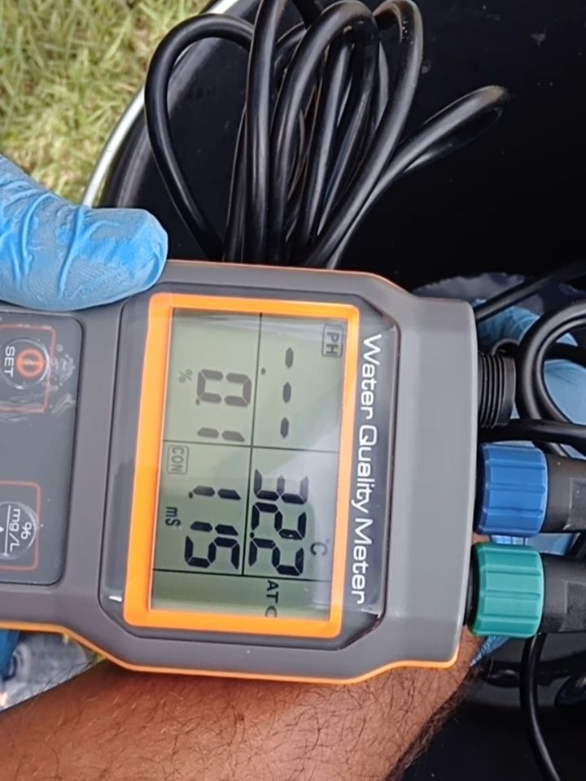
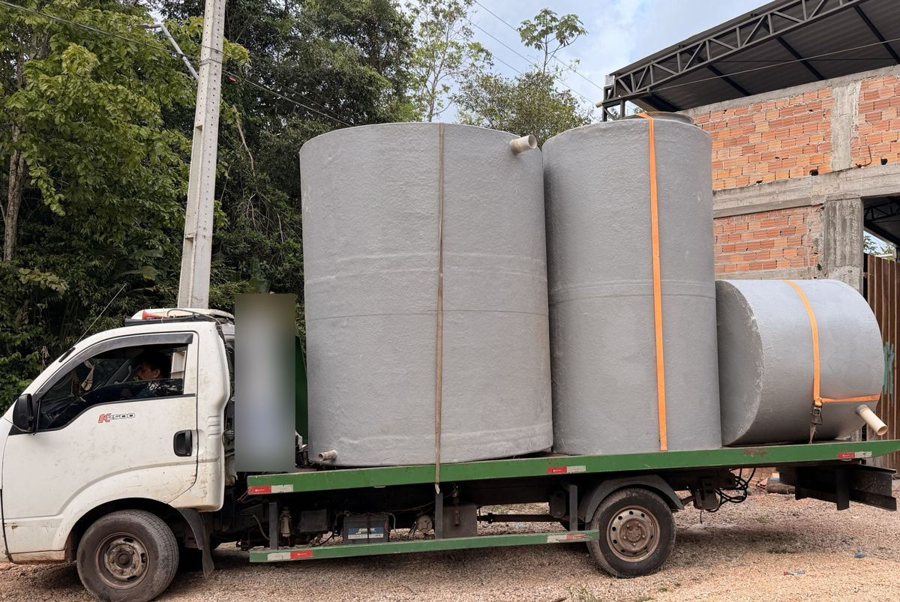

Início › Produtos › Instalação e manutenção
Instalação e manutenção
Equipe para instalar, colocar em operação e manter os equipamentos fornecidos.
- Entrega dos equipamentos saindo da nossa fábrica
- Instalação dos tanques, tubulações e quadros de comando
- Colocação em operação
- Manutenção dos equipamentos fornecidos
Entrega e instalação





Precisa instalar ou fazer manutenção?
Pedir orçamento pelo WhatsApp